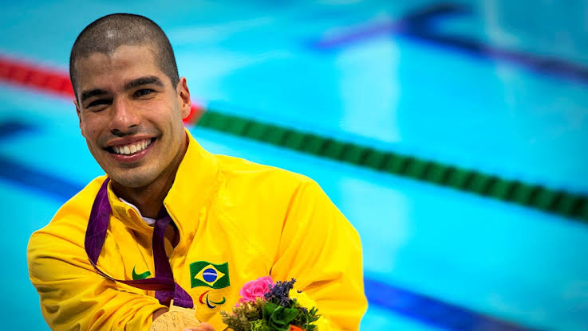

Natação paralímpica: Brasil brilha nas piscinas
Natação paralímpica: Brasil brilha nas piscinas
A natação é uma das modalidades em que o Brasil mais conquista medalhas nos Jogos Paralímpicos. Nos Jogos de Paris 2024, os nadadores brasileiros mostraram força, técnica e muita dedicação, e o país terminou entre os melhores do quadro geral de medalhas. Esses resultados mostram como o investimento em treino e apoio faz diferença.